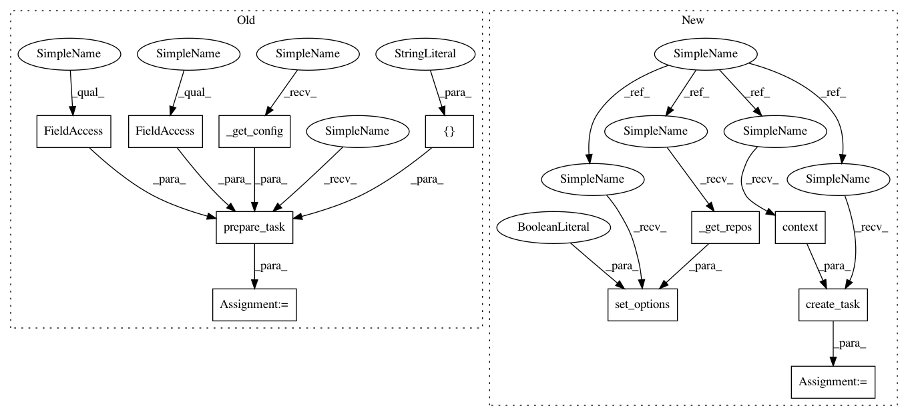

d71c53e4ef8c779d08afe546adb820618335f5f1,tests/python/pants_test/tasks/test_jar_publish.py,JarPublishTest,test_publish_retry_works,#JarPublishTest#,205
Before Change
def test_publish_retry_works(self):
targets = self._prepare_for_publishing()
task = self.prepare_task(config=self._get_config(),
args=["--no-test-dryrun",
"--test-scm-push-attempts=3"],
build_graph=self.build_graph,
build_file_parser=self.build_file_parser,
targets=[targets[0]])
self._prepare_mocks(task)
task.scm.push = Mock()
task.scm.push.side_effect = FailNTimes(2, Scm.RemoteException)
After Change
self.assertEquals(len(targets), task.scm.tag.call_count,
"Expected one call to scm.tag per artifact")
def test_publish_retry_works(self):
targets = self._prepare_for_publishing()
self.set_options(dryrun=False, scm_push_attempts=3, repos=self._get_repos())
task = self.create_task(self.context(target_roots=targets[0:1]))
self._prepare_mocks(task)
task.scm.push = Mock()
task.scm.push.side_effect = FailNTimes(2, Scm.RemoteException)
In pattern: SUPERPATTERN
Frequency: 3
Non-data size: 11
Instances
Project Name: pantsbuild/pants
Commit Name: d71c53e4ef8c779d08afe546adb820618335f5f1
Time: 2015-02-27
Author: benjyw@gmail.com
File Name: tests/python/pants_test/tasks/test_jar_publish.py
Class Name: JarPublishTest
Method Name: test_publish_retry_works
Project Name: pantsbuild/pants
Commit Name: d71c53e4ef8c779d08afe546adb820618335f5f1
Time: 2015-02-27
Author: benjyw@gmail.com
File Name: tests/python/pants_test/tasks/test_jar_publish.py
Class Name: JarPublishTest
Method Name: test_publish_retry_works
Project Name: pantsbuild/pants
Commit Name: d71c53e4ef8c779d08afe546adb820618335f5f1
Time: 2015-02-27
Author: benjyw@gmail.com
File Name: tests/python/pants_test/tasks/test_jar_publish.py
Class Name: JarPublishTest
Method Name: test_publish_remote
Project Name: pantsbuild/pants
Commit Name: d71c53e4ef8c779d08afe546adb820618335f5f1
Time: 2015-02-27
Author: benjyw@gmail.com
File Name: tests/python/pants_test/tasks/test_jar_publish.py
Class Name: JarPublishTest
Method Name: test_publish_retry_eventually_fails